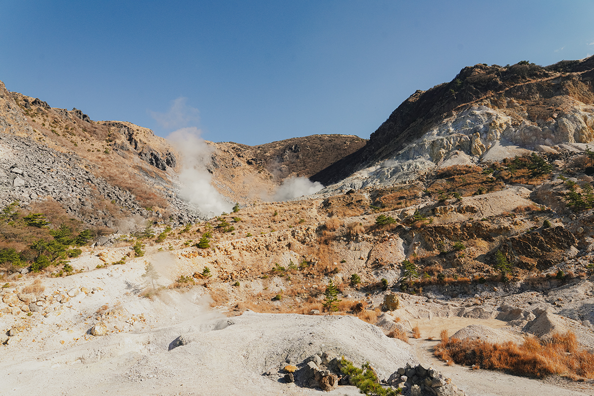
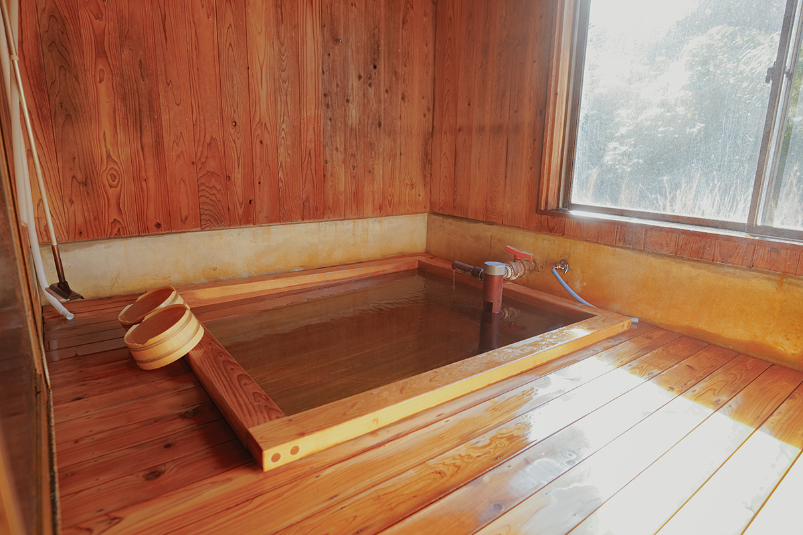
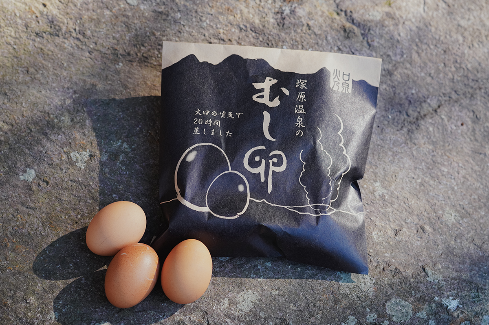
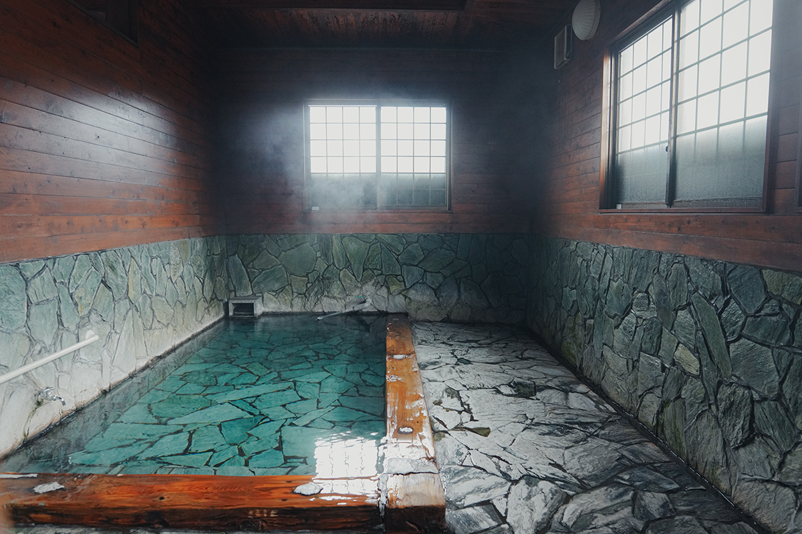
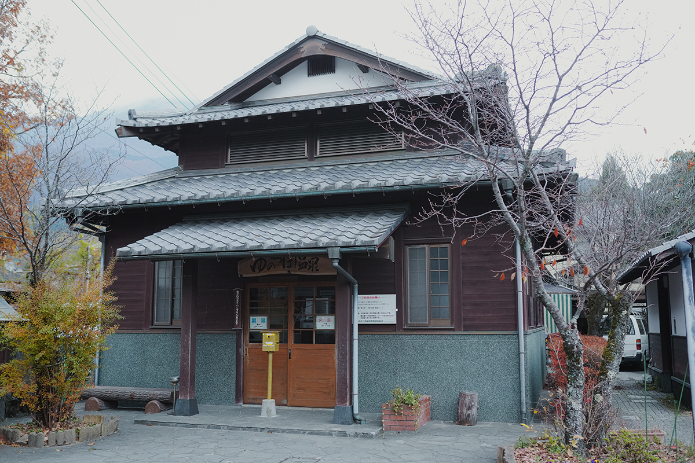
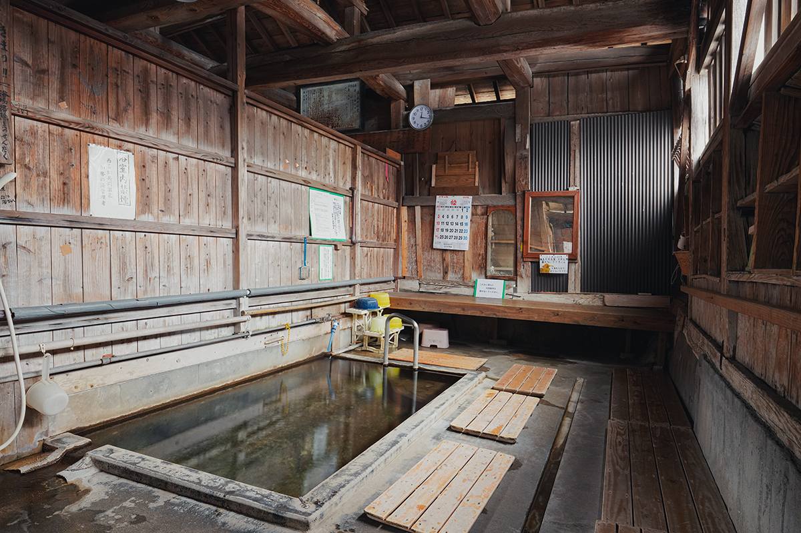
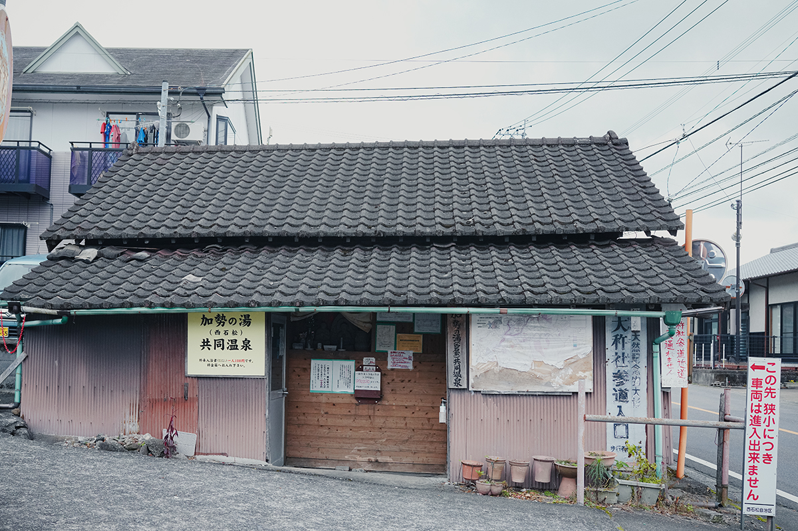

Префектура Оита · Юфуин · онсэны
Три общественные купальни Юфуина: прогулка от кратера до самой старой бани города

Тот, кто остаётся в Юфуине на несколько дней, рано или поздно выходит за порог гостиницы. Самый приятный повод для прогулки это общественные купальни: у каждой свой источник, свой характер и свои завсегдатаи.
Неспешно
Когда остаёшься дольше
В первые дни большинство гостей почти не покидает гостиницу: из купальни в номер и обратно. Но если задержаться, круг понемногу расширяется. Хочется сходить в другой онсэн, покататься на велосипеде, выбраться подальше, чтобы пообедать и пройтись по магазинам.
С каждым днём появляются любимые места, куда возвращаешься, как к старым знакомым, и тогда следующей поездки уже не избежать. Три дня тянут за собой неделю, а после недели начинает казаться, что в Юфуине можно прожить и месяц, как дома. Ниже три общественные купальни, до которых легко дойти или доехать между делами.
Кратер
«Цукахара онсэн Како-но идзуми»: целебная вода со времён Хэйан
Источник Цукахара открыли ещё в эпоху Хэйан (794–1185), и его называют одним из трёх самых целебных источников Японии. Вода здесь совсем не такая, как в самом Юфуине: кислотная, с железом, алюминием и сульфатами, с pH 1,9. Считается, что она обеззараживает и бодрит кожу, а железо прогревает тело до самой глубины, помогает пропотеть и поддерживает обмен веществ.

В ванны поступает свежая вода прямо из источника, и цвет у неё зеленоватый, но прозрачный. Вход стоил 500 иен в 2024 году.

«Цукахара онсэн Како-но идзуми»
- Адрес
- префектура Оита, город Юфу, Юфуин, Цукахара, 1235
- Телефон
- +81 977-85-4101
- Часы работы
- в январе и феврале 10:00–17:00 (последний вход), в другие сезоны время меняется
- Выходные
- возможны внеплановые закрытия в непогоду
- Цены / Вход
- 500 иен
Для всех
«Юноцубо онсэн»: купальня для своих и приезжих

Эта купальня спряталась в шаге от людной торговой улицы Юноцубо. Плату опускают в ящик у входа, а приходят сюда в основном местные жители, для которых это обычная ежедневная баня. Вода слабощелочная, течёт прямо из источника и не используется повторно. Она чуть горячее привычного и как будто плотно обнимает, свежесть чувствуется сразу. Вход стоил 200 иен в 2024 году.

«Юноцубо онсэн»
- Адрес
- префектура Оита, город Юфу, Юфуин, Кавками, 1087-1
- Часы работы
- 10:00–22:00 (может меняться)
- Выходные
- без выходных
- Цены / Вход
- 200 иен
С 1881 года
«Касэ-но ю»: самая старая купальня Юфуина

Здание построили в 1881 году, и это самая старая общественная купальня Юфуина. Она стоит у начала дорожки к святилищу Окися, а парковки у неё нет, так что сюда приходят пешком. Вода слабощелочная и мягкая. Купальню содержат сами жители округи, поэтому здесь важно соблюдать её правила и обращаться с ней бережно. Вход стоил 100 иен в 2024 году.

«Касэ-но ю»
- Адрес
- префектура Оита, город Юфу, Юфуин, Каваминами, 394-1
- Часы работы
- 7:00–22:30
- Выходные
- без выходных
- Цены / Вход
- 100 иен
Фото: Адзуса Сигэнобу.